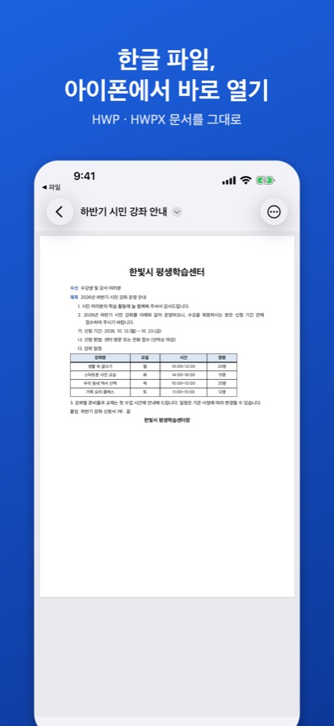

아이폰에서 한글 파일을 PDF로 바꾸기
이럴 때 씁니다
- 한글 프로그램이 없는 사람에게 문서를 보내야 할 때
- 받은 한글 문서를 편의점·사무실 프린터로 인쇄해야 할 때
- 메신저에서 파일을 열지 않고 바로 보이게 그림으로 보내고 싶을 때
PDF 저장·인쇄는 무료입니다. 서명을 넣은 문서의 PDF·쪽 이미지만 양식 저장 횟수(3번 무료, 이후 평생 이용권)를 씁니다.
PDF로 저장하는 순서
- 한글 파일을 HWP 뷰어로 엽니다. 카카오톡·메일 첨부는 공유 버튼 → ‘HWP 뷰어’, 파일 앱의 파일은 앱의 ‘둘러보기’에서 고릅니다.
- 문서 화면 오른쪽 위 ‘더 보기’(…) → ‘PDF로 저장·공유’를 누릅니다.
- 화면에 보이는 쪽 모양 그대로 PDF가 만들어지고 공유 화면이 열립니다. ‘파일에 저장’을 고르면 파일 앱에 저장되고, 카카오톡·메일을 고르면 바로 보낼 수 있습니다.

인쇄하기
‘PDF로 저장·공유’ 뒤에 열리는 공유 화면에서 ‘프린트’를 고르면 AirPrint를 지원하는 프린터로 인쇄할 수 있습니다. 프린터가 없는 곳이라면 PDF를 파일 앱에 저장해 두었다가 인쇄 가능한 곳에서 출력하면 됩니다.
쪽마다 이미지로 바꾸기
‘더 보기 › 쪽 이미지로 공유’를 누르면 쪽마다 PNG 그림이 만들어집니다(최대 30쪽, 쪽 크기의 두 배 해상도). 메신저에서 사진처럼 바로 보이므로 짧은 공지를 다시 전달할 때 편합니다.
Mac에서는
Mac용 HWP 뷰어에서는 창 위쪽 도구 막대의 ‘PDF로 내보내기’와 ‘프린트’를 씁니다. 자세한 내용은 아이패드·맥에서 한글 파일 열기를 보세요.
자주 묻는 질문
표와 그림도 그대로 나오나요?
PDF는 앱 화면에 보이는 쪽 그대로 만들어지므로 표·그림·쪽 번호가 화면과 같게 들어갑니다. 다만 앱 화면 자체가 글꼴 차이로 줄 바꿈이 조금 다르거나 일부 효과가 단순하게 보일 수 있으니, 중요한 문서는 PDF를 열어 확인한 뒤 보내세요.
반대로 PDF를 한글 파일로 바꿀 수 있나요?
됩니다. PDF·사진을 한글 파일로 바꾸는 방법을 보세요(iOS 26 이상, 3번 무료).
문서가 서버로 올라가나요?
아닙니다. PDF와 이미지는 기기 안에서 만들어집니다.